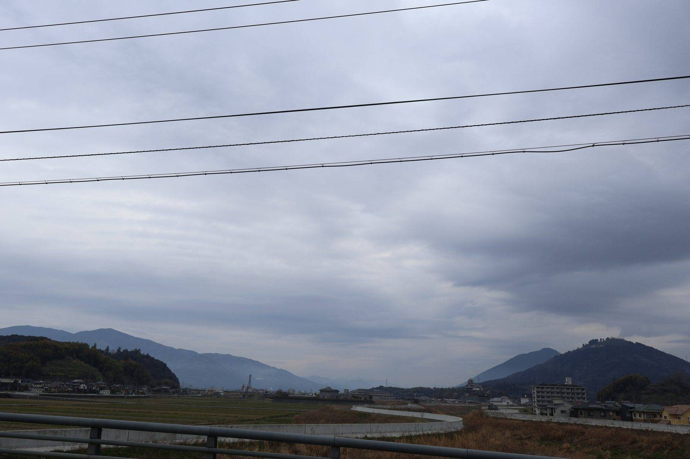

大洲のいま ・ 出典: 大洲市役所

令和８年１月30日開催の「大洲市観光まちづくり戦略会議」の令和７年度中間報告資料（キタ・ マネジメント作成）を読んでたら、思わず二度見した項目があった。
「二次交通対策」の実績として、「空飛ぶクルマの実証実験（R7.11）」「ヘリパッドの整備（R8.2に実証実験予定、R8.4-受入開始予定）」 と書かれていた。
伊予大洲駅前のレンタカー誘致（トヨタレンタカー１台整備）と並んで、まさかの 空飛ぶクルマである。
観光地としての基盤整備が地道に進む一方で、「空飛ぶクルマ」というワードだけは完全に浮いていて、 大洲がどこに向かっているのか、いい意味で予測不能だなと思った。
観光客受入環境の整備では、オーバーツーリズム対策として観光庁の事業を活用したデジタルMAP・ 看板整備・ＡＩカメラの設置、多言語化では英語・繁体字・ハングルの３か国語対応が進んでいるとのこと。
歴史的建造物の活用も着々と進んでいて、旧平田邸は合同会社ヒトシマによるギャラリーが来年度オープン予定、旧宮崎邸・旧小倉邸はCafe&Hotel Palette STAYsが増床予定。
古民家モール旧藤本医院にはniko.358（ステンドグラス・アイシングクッキー）やクレア商會（本屋）が新規出店。
目標として「ゴールドランクに向けた取組み」という一文もあり、シルバーアワードの次を狙っているらしい。
この記事を書いた時点でR8.4（2026年４月）はすでに過ぎているので、その後どうなったか調べてみた。
執筆時点（2026年８月）であらためて調べ直しても、大きな進展は見つからなかった。
まず「実証実験」自体は本当に行われていた。2025年11月３日、大洲市中村の肱北緑地多目的グラウンドで愛媛県・大洲市による実証飛行が実施され、中国EHang社製の機体（プロペラ計16枚、機体重量約430ｋｇ、定員２人）が、ホバリングと約480ｍの飛行を披露したそうだ。
愛媛新聞や愛媛朝日テレビ（EAT）がニュースとして取り上げていて、見出しには「市民らワクワク」ともあった。
2026年２月13日には大洲イノベーションセンターで、この実証飛行の結果を関係者に報告するセミナーも 開かれたようで、少なくとも「計画倒れ」で終わってはいない。
一方、資料にあった「R8.4-受入開始予定」、つまり2026年４月からの本格的な受入（実用サービスとしての運航開始）が実際にスタートしたという続報は、今回の調査（2026年８月時点）でも見つけられなかった。
国レベルでも、経済産業省・国土交通省が2026年３月に改訂した空飛ぶクルマのロードマップでは「商用運航は2027～28年ごろ」とされていて、大洲の「R8.4受入開始」はもともとかなり前のめりな目標だった可能性がある。
肝心の「一般市民の感想」も、ニュースの見出しに「ワクワク」とあるのは確認できたけれど、記事本文が有料会員限定だったり、YouTubeやケーブルテレビでの市民インタビュー映像までは見つけられなかった。
正直に言うと、このあたりはまだ調べ切れていない。続報や映像が見つかったら、また追記したい。